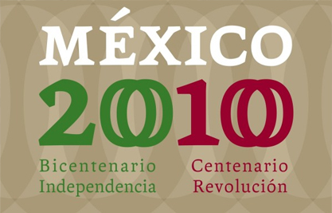

Grupo Financiero Santander México se constituyó el 14 de noviembre de1991, bajo la denominación de Grupo Financiero InverMéxico, cambiando en 1997 su denominación a Grupo Financiero Santander Mexicano; y en 1998 nos fusionamos con Grupo Financiero Santander México, S.A. de C.V., siendo Grupo Financiero Santander Mexicano la entidad fusionante. En 2000, adquirimos Grupo Financiero Serfin, S.A. y nos fusionamos con dicha entidad, siendo Grupo Financiero Santander Mexicano la entidad que subsistió. En 2001 adoptamos la denominación de Grupo Financiero Santander Serfin, S.A. de C.V.
2003
En el año 2003, Bank of America Corporation adquirió el 24.9% de nuestras acciones de Banco Santander Matriz. En 2006, cambiamos nuestra denominación a Grupo Financiero Santander, S.A. de C.V. y más tarde ese mismo año nos convertimos en Grupo Financiero Santander, S.A.B. de C.V., una sociedad anónima bursátil de capital variable.
2010
En 2010, Santusa Holding, S.L., una subsidiaria de Banco Santander Matriz, adquirió la participación que mantenía Bank of America Corporation en nuestra compañía, resultando en una participación accionaria del 99.9% por parte de Grupo Santander. Con el propósito que Grupo Financiero Santander México pueda ser plenamente identificado por el público inversionista y distinguirse de sociedades relacionadas que operan en otros países distintos de México, con fecha 13 de agosto de 2012, la Asamblea General Extraordinaria de Accionistas de Grupo Financiero Santander México aprobó cambiar su denominación social por la de Grupo Financiero Santander México, S.A.B. de C.V., lo que fue autorizado por la SHCP.

2011
El 4 de noviembre de 2011, anunciamos que habíamos finalizado la documentación definitiva y obtenido las autorizaciones necesarias a fin de cerrar la venta de nuestra subsidiaria compañía de seguros Seguros Santander a ZS Insurance America S.L., que fue creada como consecuencia de la alianza estratégica entre Banco Santander Matriz y Zurich Financial Services Group, por un precio de Ps.7,441 millones. La coinversión está controlada en un 51% por Zurich Financial Services Group y 49% por Banco Santander Matriz. Banco Santander México no es propietario de acciones en la coinversión. En relación con la venta y coinversión, Seguros Santander, como subsidiaria de Holding ZS Insurance America S.L., y Banco Santander México celebraron un contrato exclusivo de distribución respecto de todos los tipos de seguros distintos de los seguros de automóviles. Como resultado, Banco Santander México continuará vendiendo pólizas de seguros en nombre de esta nueva empresa conjunta y continuará recibiendo comisiones derivadas de dichas ventas.
2012
Con fecha 24 de septiembre de 2012, el Grupo Financiero realizó una oferta pública secundaria de acciones tanto en mercados locales como internacionales por el 24.9% del capital social. En el mercado mexicano, colocó 319,977,408 acciones ordinarias serie B por un monto total de Ps.8,695,038,250.00, mientras que en el mercado internacional colocó 238,232,161 ADSs representados por ADRs, compuestos por 5 acciones cada uno, por un monto total de E.U.A.$2,902,823,388.38. Derivado de lo anterior, las Acciones Serie B representativas del capital social de Grupo Financiero Santander México cotizan en la BMV con la clave SANMEX, y el Grupo tiene ADSs representados por ADRs registrados en la NYSE con la clave “BSMX”.
2013
Con fecha 5 de diciembre de 2013, revelamos que, una vez recibidas las aprobaciones y autorizaciones regulatorias necesarias, vendimos las acciones del capital social de Gestión Santander, de conformidad con el contrato de mayo de 2013 celebrado con Banco Santander Matriz para crecer su división de gestión de activos. Como resultado de la venta, Warburg Pincus y General Atlantic serán propietarios indirectamente del 50% del capital social de Gestión Santander, y Banco Santander Matriz será propietario indirectamente del 50% restante. La venta fue valuada en Ps.3,178.8 millones, resultando en una ganancia neta de Ps.1,926.6 millones. La operación concluyó en diciembre de 2013, y resultó en la desincorporación de Gestión Santander de Grupo Financiero Santander México. Adicionalmente, hemos celebrado contratos de distribución de largo plazo con el fin de que Banco Santander México y Casa de Bolsa Santander puedan seguir ofreciendo fondos de inversión administrados por Gestión Santander.
2014
Con fecha 19 de junio de 2014 revelamos que Banco Santander Matriz alcanzó un acuerdo definitivo con FINESP Holdings II B.V., (filial de Warburg Pincus, firma global de capital privado que se centra en inversiones de crecimiento) con la finalidad de crear un líder en el negocio de custodia. Según los términos del acuerdo, mismo que está sujeto a las aprobaciones legales y regulatorias correspondientes, el grupo nuevo, del que forma parte Singapur Temasek Holdings Private Limited (una compañía de inversión con sede en Singapur) (“Temasek”), comprará una participación del 50% del negocio actual de custodia de Banco Santander Matriz en España, México y Brasil. El 50% restante seguirá en manos de Banco Santander Matriz. Así mismo, con fecha 19 de junio de 2014 anunciamos la venta de nuestro negocio de custodia a Banco Santander Matriz por Ps.2,030 millones, sujeto a las autorizaciones legales y regulatorias. Las operaciones y el joint venture fueron aprobados por nuestro consejo de administración y el consejo de administración de Banco Santander Matriz en reunión de fecha 22 de julio de 2014. La obligación de transferir nuestro negocio de custodia se encuentra sujeto a autorizaciones legales y regulatorias que no se habían recibido al 31 de diciembre de 2014.
Banco Santander México
2014
Banco Santander México se constituyó el 16 de noviembre de 1932 bajo la denominación de Banco Mexicano. En 1955, Sociedad Mexicana de Crédito Industrial (posteriormente, Banco Somex), que se constituyó en 1941, adquirió una porción mayoritaria de las acciones de Banco Mexicano. En 1958, Banco Mexicano se fusionó con Banco Español, y Banco Mexicano fue la entidad que subsistió a dicha fusión. En 1970, Banco de Londres y México se fusionó con Compañía General de Aceptaciones (antes un accionista del Banco de Londres), y la entidad fusionante fue Banco de Londres y México bajo su nuevo nombre, Banca Serfin. En 1979, Banco Mexicano modificó su razón social a Banco Mexicano Somex, S.A., operando como una institución de banca múltiple. En 1982, los bancos comerciales mexicanos fueron nacionalizados por el gobierno mexicano. En 1990, se reformó la Constitución Política de los Estados Unidos Mexicanos para permitir la re-privatización total de los bancos comerciales mexicanos, y el gobierno mexicano promulgó la Ley de Instituciones de Crédito que llevó a la reprivatización de dichos bancos, comenzando en 1991. Como parte de este proceso de privatización bancaria, en 1992, Grupo InverMéxico adquirió Banco Mexicano Somex, que adoptó el nombre de Banco Mexicano, S.A., Institución de Banca Múltiple, Grupo Financiero InverMéxico. En 1992, se constituyó Grupo Financiero Serfín después de la adquisición de Banca Serfín por parte de Operadora de Bolsa. En 1997, Banco Santander Matriz adquirió Grupo InverMéxico, que se convirtió en Grupo Financiero Santander Mexicano; más tarde, Banco Mexicano se convirtió en Banco Santander Mexicano. En mayo del 2000, Banco Santander Matriz adquirió Grupo Financiero Serfín, que se fusionó con Grupo Financiero Santander Mexicano y modificó su razón social a Grupo Financiero Santander Serfin. En 2001, Banco Santander Mexicano adoptó la razón social de Banco Santander Mexicano, S.A., Institución de Banca Múltiple, Grupo Financiero Santander Serfín. En un inicio, Banco Santander Mexicano y Banca Serfín operaron de manera independiente. En 2004, Banca Serfín se fusionó con Banco Santander Mexicano, siendo la entidad superviviente Banco Santander Serfín, S.A., Institución de Banca Múltiple, Grupo Financiero Santander Serfin. Posteriormente, en 2006, el banco cambió su razón social a Banco Santander, S.A., Institución de Banca Múltiple, Grupo Financiero Santander. El 21 de febrero de 2008, se modificó la razón social de Banco Santander a Banco Santander (México), S.A., Institución de Banca Múltiple, Grupo Financiero Santander. Somos propietarios del 99.99% del capital social del banco. El 23 de diciembre de 2010, Banco Santander México celebró un contrato de compraventa de activos y acciones para adquirir el negocio hipotecario de General Electric Capital Corporation y sus subsidiarias, o GE Capital, en México, o el negocio hipotecario de GE Capital. El precio de compra por la adquisición fue de Ps.2,042 millones (E.U.A.$139 millones) y, adicionalmente, al cierre de la operación pagamos a GE Capital la cantidad de Ps.21,009 millones (E.U.A.$1,425 millones) por concepto de deuda inter-compañías insoluta a dicha fecha en relación con el negocio hipotecario de GE Capital, que históricamente GE Capital había financiado a través de deuda inter-compañías. El volumen total de activos al momento del cierre de la operación era de Ps.23,904 millones (E.U.A.$1,622 millones), incluyendo un total de cartera de crédito de Ps.21,926 millones (E.U.A.$1,487 millones), mientras que el volumen total de pasivos era de Ps.21,494 millones (E.U.A.$1,458 millones). La operación se concluyó el 29 de abril de 2011. La adquisición nos convirtió en el segundo mayor proveedor de créditos a la vivienda en México, en términos de créditos a la vivienda vigentes en 2011, según ha sido determinado de conformidad con los Criterios Contables CNBV. En noviembre de 2012, Banco Santander México realizó una emisión de deuda en mercados internacionales denominados Senior Notes por E.U.A$1 mil millones. Los títulos fueron emitidos y colocados conforme a la Regla 144A (Rule 144A) de la Ley de Valores de 1933 de los Estados Unidos de América (US Securities Act of 1933) y sus posteriores modificaciones. Los intereses se pagarán semestralmente, cada 9 de mayo y 9 de noviembre, comenzando el 9 de mayo de 2013. El principal se pagará al vencimiento de los títulos (9 de noviembre del año 2022). Los títulos devengarán intereses a una tasa de 4.125% anual. El principal se pagará al vencimiento de los títulos, o en su caso, en la fecha en la que se amorticen anticipadamente. En noviembre de 2013, Banco Santander México completó la adquisición del capital social de ING Hipotecaria, S.A. de C.V., Sociedad Financiera de Objeto Múltiple, Entidad No Regulada, o ING Hipotecaria, una subsidiaria de Grupo ING. Antes de la adquisición, ING Hipotecaria ofrecía productos y servicios hipotecarios a más de 28,000 clientes y operaba 20 sucursales en todo México. El total de activos adquiridos ascendió a Ps.395 millones, mismo que incluía el portafolio de crédito de ING Hipotecaria por Ps.11,237 millones, y un valor estimado de mercado de Ps.10,772 millones. En la fecha de la adquisición se esperaba que aproximadamente Ps.363 millones del portafolio de crédito fueran incobrables. Como parte de la transacción hicimos un pago en efectivo de Ps.514 millones por el capital social de ING Hipotecaria. La adquisición consolida la posición de Banco Santander México como el segundo proveedor de créditos hipotecarios más grande en México con una participación de mercado que se incrementó de 17.7% al 31 de diciembre de 2013 a 18.9% al 31 de diciembre de 2014. Desde la adquisición, Banco Santander México cerró 18 de las 20 sucursales que operaba, con el objetivo de consolidar la red de distribución e incrementar la eficiencia operativa. El 13 de diciembre de 2013, ING Hipotecaria obtuvo aprobación de sus accionistas para modificar su denominación a Santander Vivienda, S.A. de C.V., Sociedad Financiera de Objeto Múltiple Entidad Regulada, o Santander Vivienda. En febrero de 2014 Santander Vivienda obtuvo los permisos necesarios para el cambio de denominación. En diciembre de 2013, Banco Santander México colocó en el mercado nacional e internacional una oferta pública de deuda por un monto de E.U.A.$1,300 millones en notas subordinadas de capital (Subordinated Capital Notes) que cumplen con los requisitos de capital previstos por los criterios Basilea III para el capital complementario/Tier2. El 19 de junio de 2014, anunciamos que nuestra controladora, Banco Santander Matriz había celebrado un acuerdo definitivo con FINESP Holdings II B.V. (filial de Warburg Pincus, un fondo de capital privado líder a nivel global enfocado en la inversión) para crear un líder en el negocio de custodia. De conformidad con los términos de dicho acuerdo, el cual se encuentra sujeto a autorizaciones legales y regulatorias, el nuevo grupo, el cual también incluye a Temasek, adquirirá una participación del 50% en las operaciones actuales de custodia de Banco Santander Matriz en España, México y Brasil. El 50% restante será conservado por Banco Santander Matriz. De igual forma, con fecha 19 de junio de 2014 anunciamos que Banco Santander Matriz había adquirido nuestro negocio de custodia por Ps.2,030 millones sujeto a autorizaciones legales y regulatorias. Los contratos de compraventa y el acuerdo de joint-venture fueron aprobados tanto por nuestro consejo de administración como por el consejo de administración de Banco Santander Matriz en la sesión celebrada el 22 de julio de 2014. Nuestra obligación de transferir nuestro negocio de custodia se encuentra sujeta a aprobaciones legales y regulatorias que no habían sido recibidas hasta el 31 de diciembre de 2014. El 25 de noviembre de 2014, firmamos un acuerdo con Scotiabank para adquirir un portafolio de créditos al consumo no revolvente de aproximadamente 39,200 créditos, con un saldo total de aproximadamente Ps.3,179 millones. Pagamos Ps.3,002 millones por dicho portafolio. La adquisición fue realizada en dos tramos y completada el 4 de abril y 19 de abril de 2015.